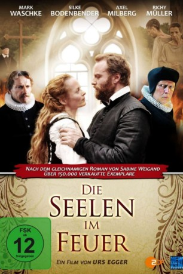

#9809 Die Seelen im Feuer
 
 IMDB-Wertung: 6.6 / 10
IMDB-Wertung: 6.6 / 10  Metascore: 0
Metascore: 0 
Im Jahre 1630 erreicht die Hexenverfolgung in Bamberg einen Höhepunkt. Niemand ist sicher vor Anschuldigungen der Ketzerei, denn der Fürstbischof von Dornheim bereichert sich an den unschuldig verurteilten Bürgern. Der junge Arztsohn Cornelius muss aufgrund seines im Sterben liegenden Vaters seine Forschungen in Wien ruhen lassen und nach Bamberg zurückkehren. Dort trifft er auch auf seine Jugendliebe Johanna, die die Apotheke ihres Vaters leitet. Eigentlich will Cornelius Bamberg schnellstmöglich den Rücken kehren, aber als ihn der Fürstbischof in seine Dienste beruft, geraten er und auch Johanna in ein Netz aus Intrigen, Macht und Gier. Unbescholtene Bürger landen schneller auf dem Scheiterhaufen als jedem lieb wäre. Können Cornelius und Johanna ihre Fesseln lösen und Bamberg schließlich unbeschadet verlassen?
Jahr: 2014
Dauer: 110 Minuten
FSK: 12
Land: Deutschland Studio: New KSMTonspuren:
Untertitel:
Auflösung: 1080p (1920x1080) Größe: 7546 MB
Genre: Drama
Regisseur: Urs Egger
Drehbuch: Annette Hess, Stefan Kolditz, Sabine Weigand
Soundtrack: Marius Ruhland
Darsteller:
 Mark Waschke als Cornelius Weinmann
Mark Waschke als Cornelius Weinmann Paulus Manker als Fuchs von Dornheim
Paulus Manker als Fuchs von Dornheim Axel Milberg als Herrenberger
Axel Milberg als Herrenberger Rainer Bock als Abdias
Rainer Bock als Abdias Richy Müller als Johannes Junius
Richy Müller als Johannes Junius Michael A. Grimm als Kircher
Michael A. Grimm als Kircher Max Tidof als
Max Tidof als - Markus Schleinzer als Schwartconz
 Andreas Patton als Jacob Dietmayr
Andreas Patton als Jacob Dietmayr Gerhard Liebmann als Heinrich Moorhaupt
Gerhard Liebmann als Heinrich Moorhaupt- Patricia Aulitzky als Barbara Murner
- Silke Bodenbender als Johanna
 Michael Gempart als Schreiber Schmeltzing
Michael Gempart als Schreiber Schmeltzing- Franziska Singer als Ellin
- David Wurawa als Casper
- Alexander Held als Weihbischof Förner
- Maximilian von Pufendorf als Hans Schramm
- Nino Böhlau als Hansi Moorhaupt
- Philipp Franck als Antoni Wolf
- Martin Weinek als Rat Heinrich Flock
- Mischa Domov als Rat Ebmeyer
- Sascha Rubaniak als Rat Adam
- Bernd Birkhahn als Vizekanzler Heinrich von Stralendorf
- Thomas Erlmoser als 2. Einholer
- Eric Evers als Kind Cornelius
- Klaus Huhle als Vater Weinmann
- Miller-Aichholz als Henker
- Emilia Pieske als Mariele
- Ronald Seboth als Arzt Jacob Eberlein
- Imre Szanto als Arzt Lorentz Schilling
- Siegfried Walther als Graf Eszterhazy
- Eduard Wildner als Graf Bensheim
- Karoline Zeisler als Margaretha Reuss
Datei: X:\2014(N-Z)\Seelen im Feuer, Die (2014, FSK12, 1920x1080).mkv seit 29.10.2018
Festplatte: HD 2013(I-Z)-2014(A-Z)
 Es gibt insgesamt 163 Filme in der Gruppe '2014(N-Z)'
Es gibt insgesamt 163 Filme in der Gruppe '2014(N-Z)'